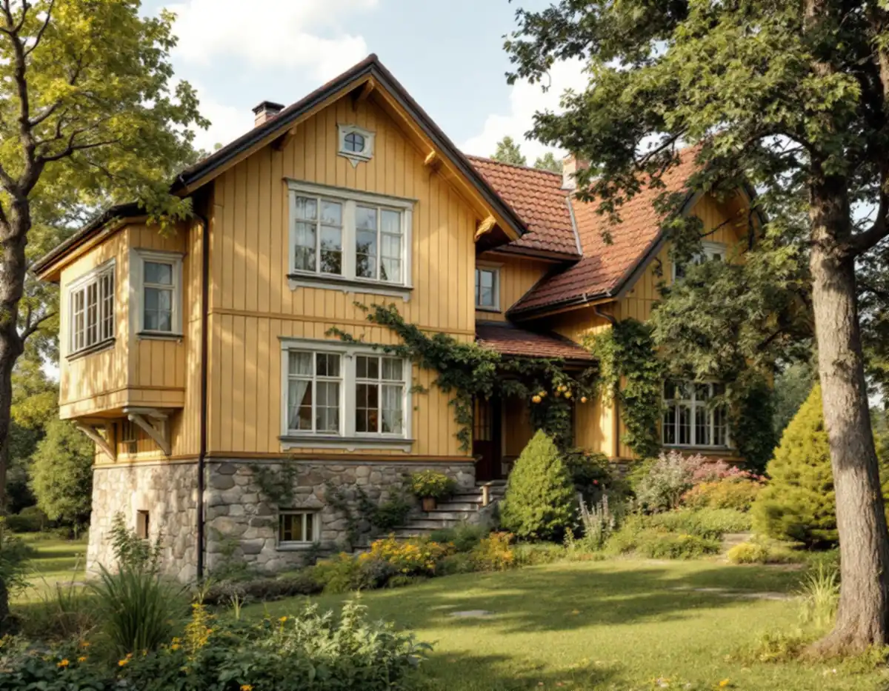
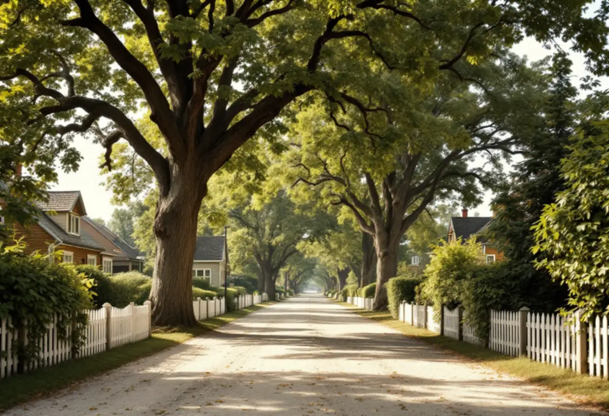
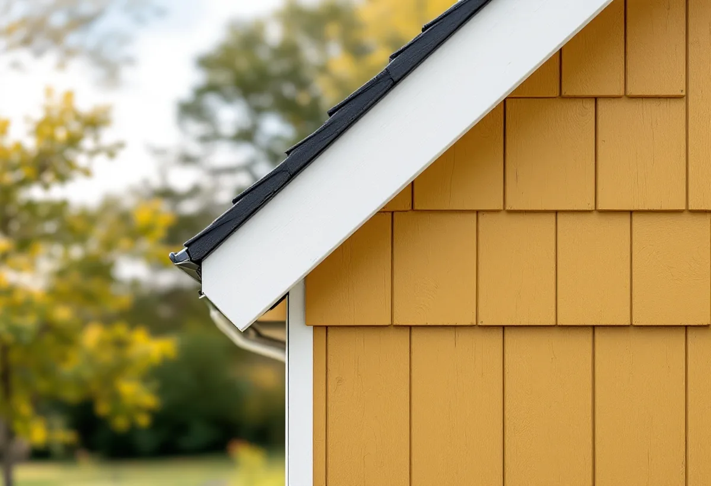

Läget
Vi ser om huset ligger i Duvbo eller är kulturhistoriskt värdefullt.
I Sundbyberg gäller de lovfria tillbyggnaderna inte i Duvbo eller på kulturhistoriskt värdefulla byggnader. I villastaden krävs alltså bygglov, och staden har tydliga riktlinjer för hur en tillbyggnad ska se ut. Geal Entreprenad AB ritar efter dem och bygger till huset med total entreprenad.

Sundbybergs stad skriver att lättnaden för bygglovsbefriade tillbyggnader inte gäller för kulturhistoriskt värdefulla byggnader eller i riksintresset Duvbo. Utanför dem får en tillbyggnad vara högst 30,0 kvadratmeter brutto- eller öppenarea och ska vara lägre än husets taknock, och tidigare attefallstillbyggnader, attefallstakkupor och lovfria skärmtak räknas in.
Enligt stadens miljöprogram bildades föreningen Egna Hem 1898 och köpte året därpå egendomen Dufvebol, där en stadsplan med 325 tomter togs fram. Området utökades 1924 med ytterligare 98 villatomter, och 1987 pekade Riksantikvarieämbetet ut Duvbo som riksintresse för kulturmiljövården – som ett av de första exemplen på en välorganiserad egnahemsförstad i Stockholmstrakten.

Miljöprogrammet säger att en tillbyggnad inte får vara så stor eller placeras så att den dominerar över den ursprungliga huskroppen eller påverkar gatubilden. Husets ursprungliga volym ska gå att urskilja även efter tillbyggnaden. Tillbyggnaden ska ansluta till husets form, material och färg, och programmet skriver att plana tak inte hör hemma bland egnahemsbebyggelsen från 1900–1920-talen. Förgårdsmarken ska bevaras, och tillbyggnader och uthus ska läggas så att områdets öppenhet behålls.
Stadens allmänna råd för tillbyggnader pekar åt samma håll: tillbyggnaden ska underordna sig husets volym, till exempel genom en lägre volym som håller avstånd till taknocken och lämnar husets hörn fria med tydliga indrag. I praktiken blir det ofta en tillbyggnad mot trädgården med sadeltak och samma panel som huset. Miljöprogrammet beskriver att husen från sekelskiftet och 1920-talet ofta står i två våningar på höga socklar och att träfasaderna ursprungligen målades med linoljefärg eller slamfärg i jordnära kulörer. Det är bra att utgå från när kulören på den nya delen ska bestämmas.
Träden i Duvbo är skyddade i detaljplanen. Staden skriver att det krävs marklov för att fälla ett träd med en stamdiameter större än 20 centimeter på 1,3 meters höjd, och att den är restriktiv med att bevilja det. Till ansökan hör foton, en situationsplan med träden utmärkta och skälet till fällningen.
En tillbyggnad som kräver att ett större träd tas ned blir därför två prövningar. Vi placerar hellre tillbyggnaden så att rotsystemen klarar sig, och om ett träd ändå står i vägen tar vi med marklovet i planeringen från början. Programmet nämner också att den utökade lovplikten i Duvbo omfattar bland annat fasadmaterial, omfärgning och byte av fönster.
Till en bygglovsansökan för tillbyggnad brukar staden vilja ha plan-, fasad- och sektionsritningar, en förenklad nybyggnadskarta, en material- och kulörbeskrivning samt kontrollansvarig eller kontrollplan. Staden skriver att det ofta krävs en kontrollansvarig vid en tillbyggnad, men att en kontrollplan kan räcka vid enklare tillbyggnader som ett uterum. Ritningarna ska vara skalenliga och ha måtten i millimeter.
Utanför Duvbo kan en lovfri tillbyggnad ändå kräva anmälan om den påverkar konstruktion eller brandskydd väsentligt, eller om en eldstad eller vatten och avlopp installeras. Vill du ha ett beslut i förväg kan du söka frivilligt bygglov, som enligt staden kostar lika mycket som ett vanligt bygglov. Mer om större projekt finns under byggföretag i Sundbyberg.

Vi ser om huset ligger i Duvbo eller är kulturhistoriskt värdefullt.
Huset, träden och förgårdsmarken mäts in vid ett gratis besök.
Tillbyggnad som underordnar sig huset, med material- och kulörbeskrivning.
Bygglov, och marklov om ett större träd berörs.
Grund, stomme, tak och anslutning mot huset, med kontroll enligt planen.
Den nya delen används när slutbeskedet har kommit.
Rotavdraget gäller arbetskostnaden, inte material. Skatteverket räknar en tillbyggnad av ett bostadshus som rotarbete om någon av dess sidor sitter ihop med husets yttervägg till minst 75 procent eller om en dörr förbinder de två delarna.
Bostaden ska vara äldre än fem år och större delen av den ursprungliga stommen ska behållas. Där avdraget gäller drar Geal det direkt på fakturan.
Storlek och grundläggning, anpassning av tak, panel och fönster till ett äldre hus, eventuell kontrollansvarig, hänsyn till träd och rötter samt installationer. Efter ett gratis platsbesök får du ett skriftligt kostnadsförslag.
Mer boyta i samma hus.
Tillbyggnad →Takbyte, takbesiktning och plåtarbeten.
Takläggare i Sundbyberg →Ventilationen, OVK och Duvbo.
Badrumsrenovering i Sundbyberg →Nytt hus, träd och regler i Duvbo.
Byggföretag i Sundbyberg →Panel och puts på Duvbos villor.
Fasadrenovering i Sundbyberg →Duvbo, flerbostadshusen och lovet.
Fönsterbyte i Sundbyberg →Ta bort färg och fernissa från gamla golv.
Golvslipning i Sundbyberg →Duvbos villor och stadens lägenhetskök.
Köksrenovering i Sundbyberg →Lamellhus, kulörbyte och bostadsrätt.
Målare i Sundbyberg →Duvbos tak, rännor och lov.
Plåtslagare i Sundbyberg →Altan, pergola och staket enligt stadens guide.
Snickare i Sundbyberg →Ny tapet i äldre lägenheter.
Tapetsering i Sundbyberg →